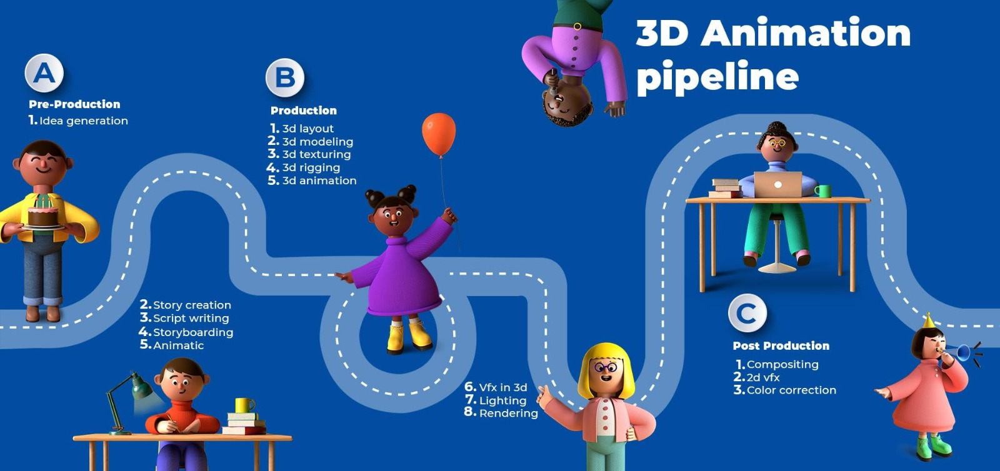

3D Animation Pipeline

Entering into the environment we can see many departments working on their own tasks and each and every
department's workflow will completely dependent on other departments. As we start from the beginning we have
departments like
Departments
- Modeling
- Texturing
- LookDev
- Layout
- Animation
- Rigging
- FX
- MatchMove
- Lighting
- Comp
- Rendering
- Pipeline
- Production
Assignments
- As a first assignment. Take a challenge to get a complete knowledge on what is going on the
floor and should get knowledge about upstream and downstream departments. To get more in
connection with the Departmental workflow visit this links mentioned below.
Studio Pipline
Departmental Workflows
Vis Dept Workflow
- As a second assignment, Get in touch with production workflow and know how they work with all
departments and follow this below links. Production Management Visual Effects (VFX) and Feat ure
Animation Pipeline - Part 01 Visual Effects (VFX) and Feature Animation Pipeline - Part 02
Visual Effects (VFX) and Feature Animation Pipeline - Part 03 THE LINEAR WORKFLOW IN 3D CG
APPLICATIONS
- As a third assignment, Get to know about the tools like which tool is using the most and every
department is working with. Tools like we have MAYA,NUKE MARI,SUBSTANCE etc..
- As a fourth assignment. We should know what are the things which artists are working manually
with and how pipeline made it as automation by creating plugins.
- Basically Pipeline works with every department in the studio as we make easy for an artist in
his/her working by making automation than manual and we generate plugins and tools using coding
part.
To get to know about pipeline we use linux as our working environment, so we should get to know
more about Linux commands and UI to work-on. Linux Overview
- As we are working with python,so we should have enough knowledge in coding part as well, Coding
goes
in two ways like 1.DEV Part and 2.TESTING part
DEV- This is a development team as we work on plugins using python.
TESTING - Here we test the plugins before we get it deployed to live.
- To work as developer and tester, we should have to get knowledge about the tools and IDE's that
pipeline uses, they are like
- PYCHARM- It is an IDE,uses to write code. Git Workflow using Pycharm
- BITBUCKET - Uses to hold code data in cloud in repo's and branches respectively Getting
Started in Bitbucket
- GIT-Plays role to pull or push codes and many things Git Workflow - Pipeline
- Jira - Tracking tool on ticket,helps in creating tickets on the plugin or tool to get
automated Core Pi peline Board
- Confluence - Wikipedia of our studio & Confluence
| Your Remote-Friendly Team Workspace
| Atlass ian
- TRELLO - What all the helps need in studio through Pipeline was taken according to
respective departmentshttps://trello.com/
- JENKINS-Helps in deploying the code changes to live environmentjenkins
- Shotgrid - Vast things to explore in like publishing shipments etc..
Autodesk
Flow Production Tracking (Formerly ShotGrid) Software | Get Prices & Buy Official Flow
Production Tracking
- RV-It is a player used to play heavy data content
https://knowledge.autodesk.com/support/shotgrid/learn-explore/cas/CloudHelp/cloudhelp/ENU/SG-
RV/files/v-knowledge-base/SG-RV-rv-knowledge-base-rv-download-install-html-html.html
- ShotGunAutodesk
Flow Production Tracking (Formerly ShotGrid) Software | Get Prices & Buy Off
icial Flow Production Tracking
- H.PZ-Central-Remote access Z by HP Remote
Access Solution
- Slack-communication with in the studio External Communication & Collaboration With
Clients | Slack Connect
- Zoom-meetings One platform to connect | Zoom
- All DCC apps - Chrome, Firefox,etc...
- And all the tools used by artists in the studio
- All this apps and IDE's are helpful to work in Pipeline.